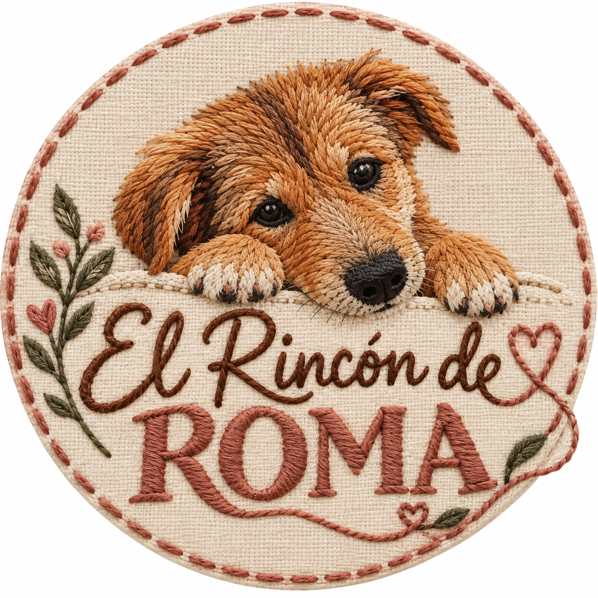

Un poquito de tela, un montón de amor ♡

El Rincón de RomaCOSTURA CON ALMA
Pequeñas cosas.
Hechas con
mucho amor.
Creaciones de tela que abrazan lo cotidiano.
Un rincón donde cada puntada tiene su encanto.
✧ Hecho a mano, con tiempo y cariño.
✳
cada puntada,
un poquito de amor♡
✧un poquito de amor♡
Hecho a mano✧Detalles que enamoran✧Con amor, de principio a fin
HECHAS DESPACITO, PARA DISFRUTAR MUCHO
Un poquito de amor
en cada creación.
Para vos, para tu casa,
para regalar un mimo.
Seguí descubriendo ↓
♡ DETALLES QUE ABRAZAN · Creaciones de tela para tu hogar y una Navidad con encanto.
♡
Siempre hay lugar para algo lindo más.
Vamos a ir sumando cada creación a este rincón.BIENVENIDA A NUESTRO RINCÓN
Lo lindo de lo
hecho a mano.
El Rincón de Roma nace de las ganas de crear cosas lindas con las manos. De elegir una tela, combinar colores y ver cómo, puntada a puntada, algo empieza a tomar forma.
Un emprendimiento de costura con una idea sencilla: poner cariño en los detalles y compartirlo en cada creación.
Con amor, El Rincón de Roma ♡SIGAMOS EN CONTACTO
Algo lindo está por venir.
Estamos dando las primeras puntadas de este rincón.
Pronto sumaremos nuestros medios de contacto para que puedas consultar y hacer tu pedido.